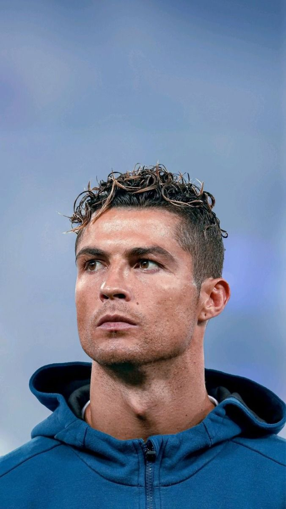

About Cristiano Ronaldo

Cristiano Ronaldo was born on February 5, 1985, in Madeira, Portugal. He began playing professional football at a young age and later became one of the most successful players in the world. He played for famous clubs such as Manchester United, Real Madrid, and Juventus. Ronaldo is known for his goals, athletic ability, discipline, and hard work.
Important Career Events
- 1985 – Born in Madeira, Portugal.
- 2002 – Started his professional career at Sporting CP.
- 2003 – Joined Manchester United.
- 2008 – Won his first Ballon d'Or.
- 2009 – Joined Real Madrid.
- 2016 – Won the UEFA European Championship with Portugal.
Achievements and Contributions
- Won multiple Ballon d'Or awards.
- Won the UEFA Champions League several times.
- Became the captain of the Portugal national team.
- Scored hundreds of professional career goals.
- Inspired young athletes around the world.
More Information
Visit Cristiano Ronaldo's Instagram page to see his official posts.
You can also read his full biography on Wikipedia.
Learn More